CS 180: Project 3
This is project 3 of CS 180 in Fall 2026, exploring flow matching models.
Note: click any image to enlarge it.
Part A: Exploring the Power of Flow Models
For Part A, I used the pretrained PixNerd flow model. A noisy image mixes the clean image and Gaussian noise, where t = 0 is pure noise and t = 1 is the clean image. For 1.1 to 1.5, I used a photo of Rocky fighting Apollo Creed from the movie Rocky (1976).
Part A 1.1: Constructing Noisy Training Inputs
I used the same noise for all three times. At t = 0.25 the boxers are barely visible, at 0.50 they're clear but grainy, and at 0.75 the image is mostly clean.
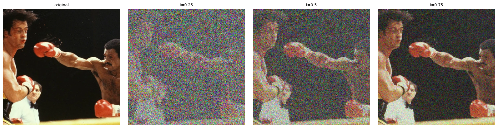
Part A 1.2: Classical Denoising
I divided the noisy image by t, blurred it, and kept the σ (out of 1, 2, 4, 8 and 16) with the lowest error.
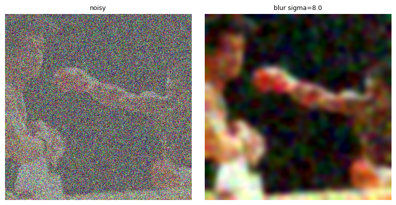
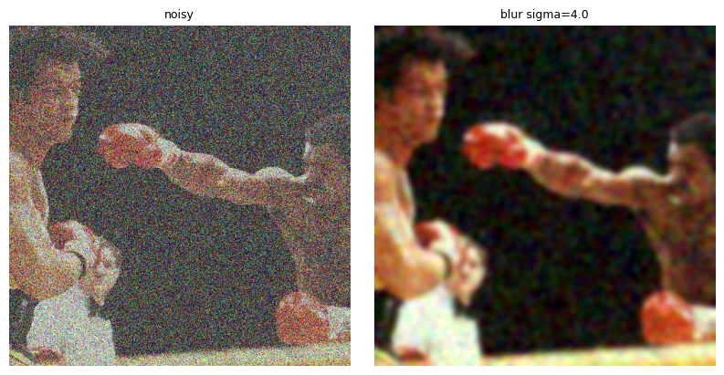
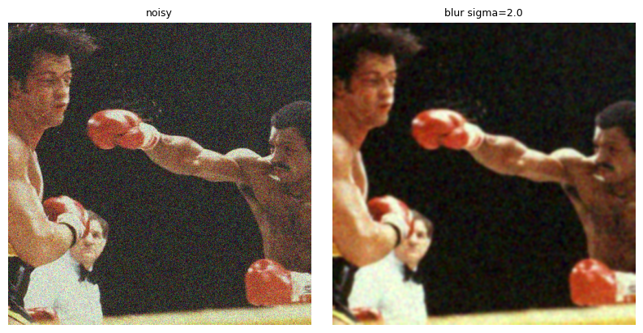
More noise needs a stronger blur, which also removes more detail. At t = 0.25 we're left with blobs of color, while at 0.75 the faces are still there.
Part A 1.3: One-Step Denoising
I predicted the velocity once with the prompt "a high quality photo" and jumped straight to t = 1. Since the velocity points from the noise to the image, (1 − t) times it is how far is left to go.
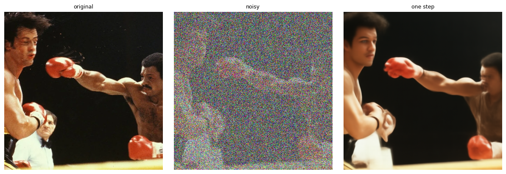
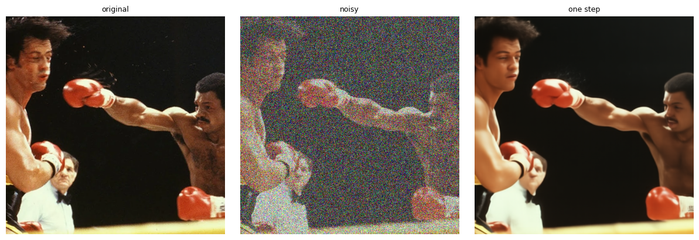
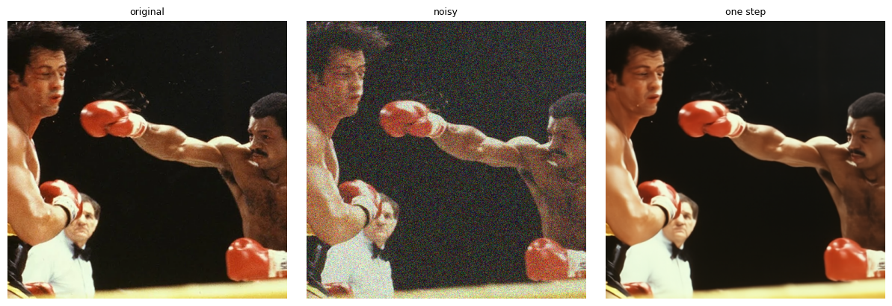
The results are sharp, but at high noise the model has to guess. At t = 0.25 both boxers get new faces and the referee disappears, while at 0.75 it's very close to the original.
Part A 1.4: Visualizing Velocity
This compares the model's predicted update with the true update, and the heatmap shows the error at each pixel.
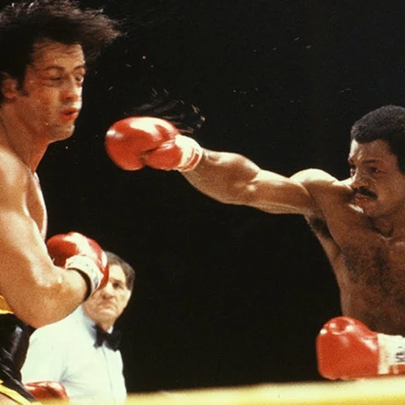
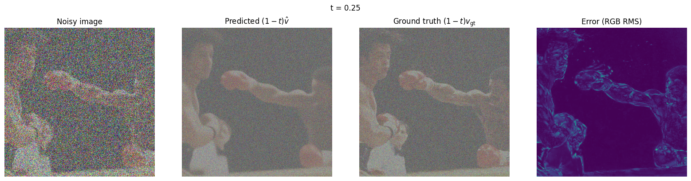
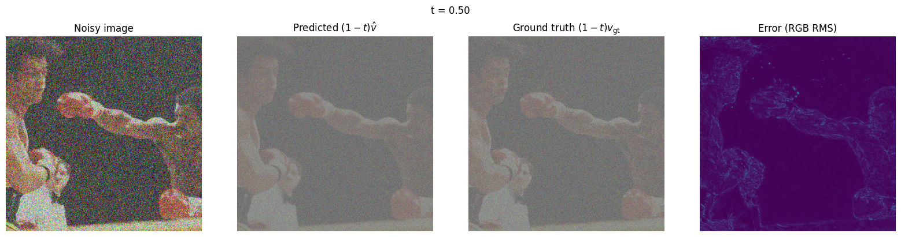
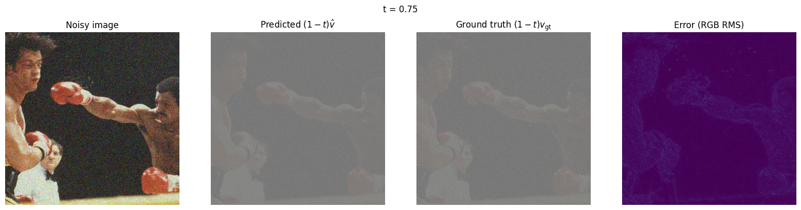
Most of the error is on edges like the faces, hair and gloves, and there's almost none on the black background. The error also gets smaller as t increases, since less correction is needed.
Part A 1.5: Iterative Denoising with Euler Sampling
Instead of one big step, I took 25 small Euler steps from t = 0.50, predicting a new velocity each time.
Euler Trajectory
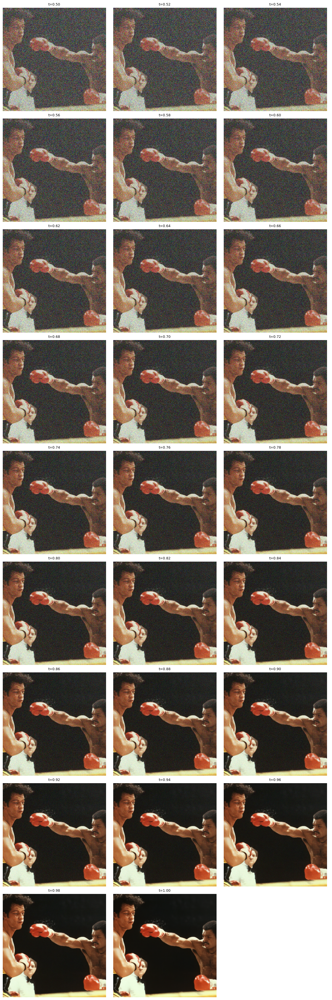
We can see the grain fade a little at each step until it's gone at 1.00. The poses and colors stay the same the whole way, since starting at 0.50 already keeps them, while details like the faces and the referee get sharper.
Comparison of Denoising Methods
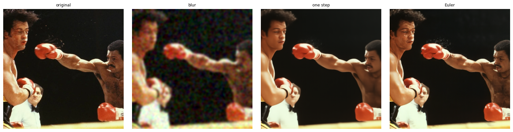
| Method | MSE |
|---|---|
| Gaussian blur | 0.0181 |
| One-step | 0.0039 |
| Euler | 0.0048 |
Blur is the worst. One-step has the lowest error but looks airbrushed, while Euler keeps more detail like the skin texture and sweat. This could be because the extra detail doesn't exactly match the original pixels, so the error goes up a bit.
Part A 1.6: Generating Images from Noise
I started from pure noise at t = 0 with seeds 180 to 184 and the prompt "a high quality photo".

All five samples are portraits of people, so the generic prompt seems to strongly favor portrait photos. The quality is mixed: seeds 182 and 184 look like reasonable photos, but seed 180 has a smeared, missing face, seed 183 has a distorted face, and seed 181's body looks unnatural.
Part A 2.1: Classifier-Free Guidance (CFG)
I combined the velocities from the prompt and an empty prompt with w = 7.

Using the same starting noise as in Section 1.6, the CFG samples are much cleaner. All five are sharp, well-formed studio portraits with no distorted faces, and some keep the pose from the unguided version, like the hand by the face for seed 182. The trade-off is diversity: they all look like the same kind of front-facing headshot with similar lighting, while the unguided samples varied more.
Part A 3.1: Image-to-Image Editing
I noised each image to a starting time and then denoised it with "a high quality photo". Lower starting times give bigger edits. I used 0.02, 0.04, 0.06, 0.10, 0.14, 0.25 and 0.50. This works because the model has to make up whatever the noise covered, so more noise gives it more room to change things.
Campanile

At 0.02 it's just a plain white pillar. The tower's details come back gradually, and the clock only shows up at 0.50.
Rocky vs Apollo
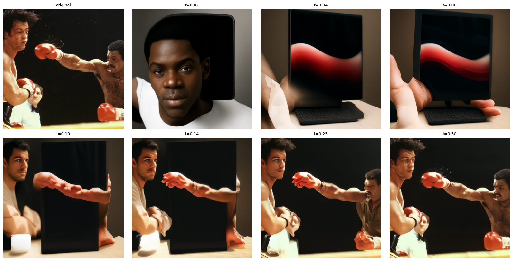
At 0.02 it's a portrait and at 0.04 to 0.06 a computer monitor. At 0.10 and 0.14 there's a man and an arm reaching across, but the middle is a black panel. The boxers come back at 0.25.
Green Lantern Action Figure
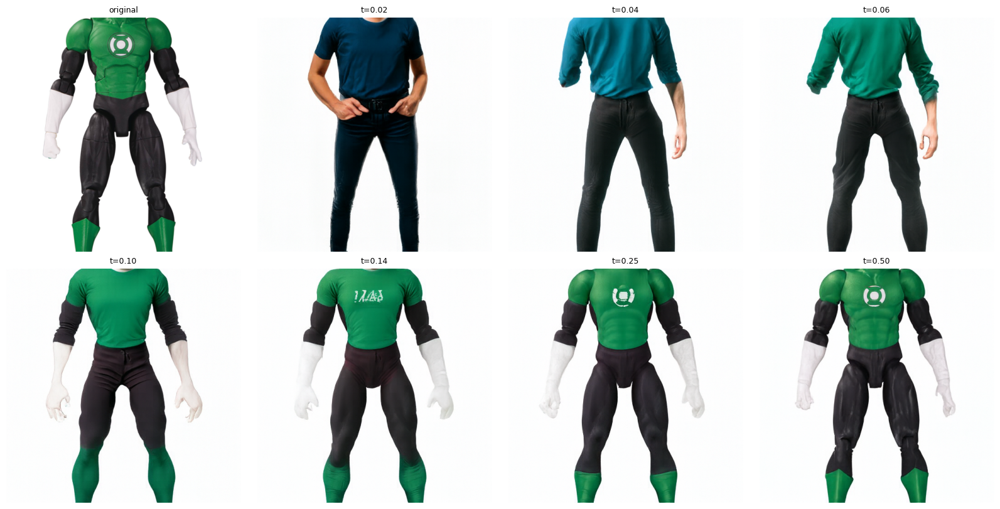
The square crop cut off the figure's head and feet. At low starting times it turns into a regular person in a T-shirt, and the costume is back by 0.25.
Editing Web and Hand-Drawn Images
I used a cartoon tree from the web, and drew a flower and a sun myself using the free drawing website kleki.com.
Web Image: Cartoon Tree
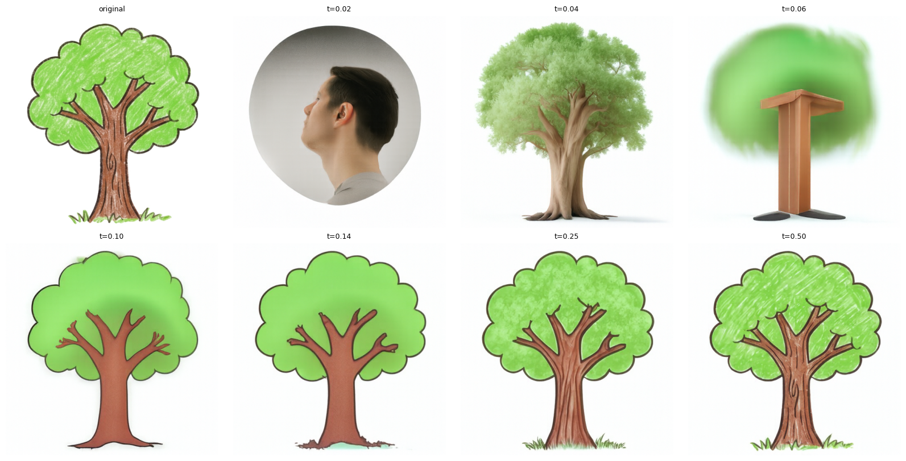
At 0.02 it's a man's head and at 0.04 a realistic tree. The cartoon is back from 0.10.
Hand Drawing 1: Flower
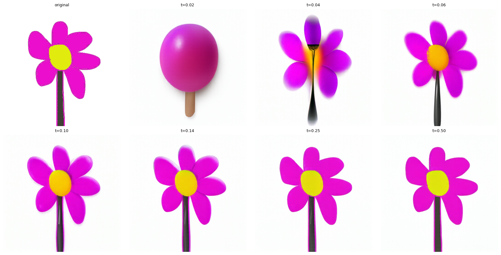
At 0.02 it's a lollipop and at 0.06 a more realistic flower. My drawing is back from 0.10.
Hand Drawing 2: Sun
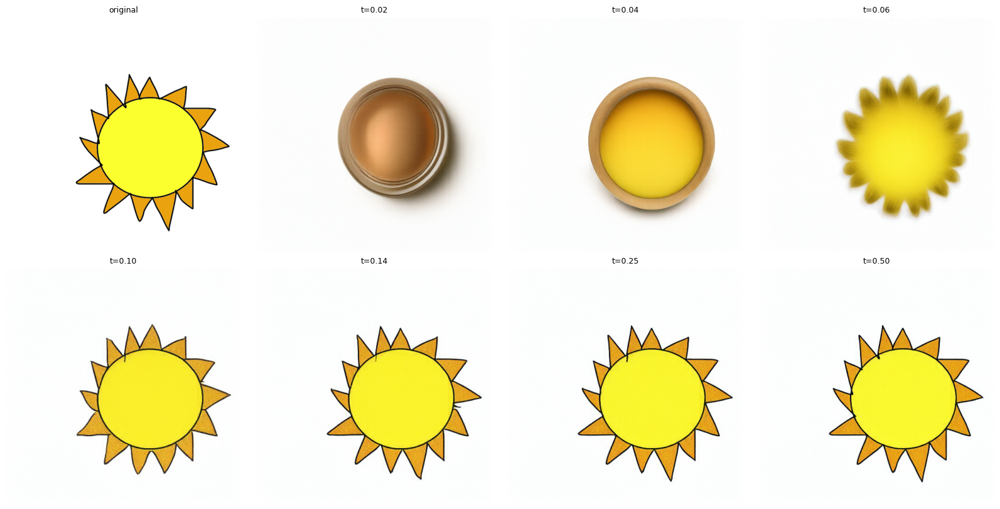
At low starting times it becomes a jar and then a bowl, probably because of the round shape. The sun is back from 0.10.
Part A 3.2: Text-Guided Image Editing
Same as 3.1, but with my own prompt for each image. Lower starting times follow the prompt more, and higher ones keep more of the original.
Campanile to Rocket
Prompt: “a photo of a rocket on a launch pad”
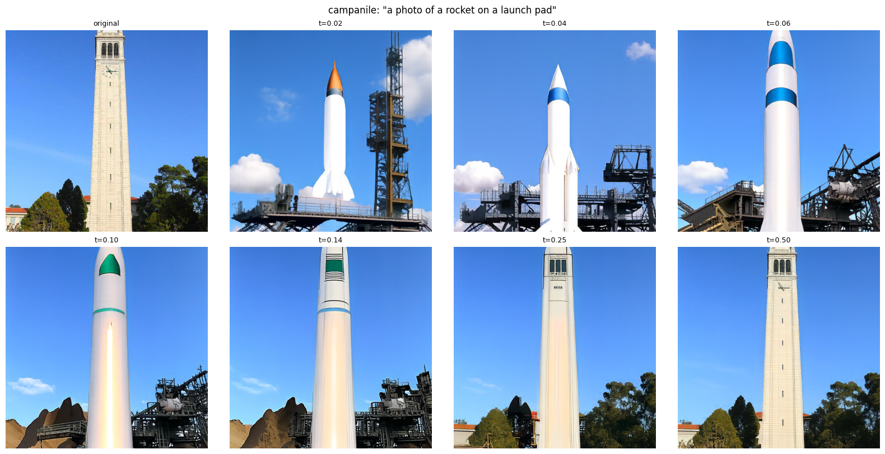
At 0.02 to 0.06 it's a full rocket, at 0.10 to 0.14 a rocket shaped like the tower, and by 0.50 it's the Campanile again.
Rocky vs Apollo to Boxing Robots
Prompt: “two robots boxing in a boxing ring”
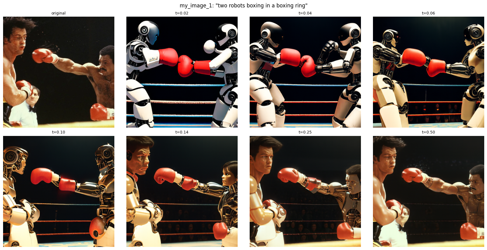
The low starting times give two robots boxing, and 0.14 and 0.25 are a mix of robots and humans.
Green Lantern to Squirrel
Prompt: “a squirrel in green lantern costume”
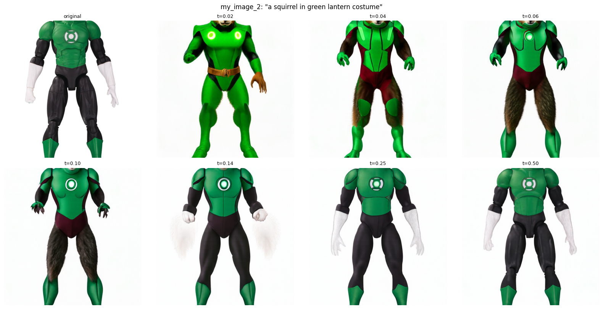
Since the head was cut off, the squirrel mostly shows up as fur on the legs instead of a face. It's back to the original by 0.25.
Part A 3.3: Visual Anagrams
At each step, I averaged the velocity of the upright image with the velocity of the flipped image (flipped back). Both prompt pairs are examples from the inspiration page linked in the project spec.
Anagram 1: Kitchen / Deer
Upright: “an oil painting of a kitchen” · Rotated 180°: “an oil painting of a deer”
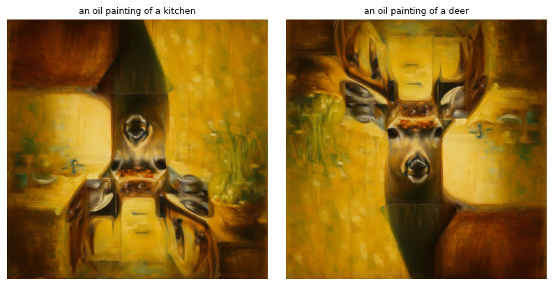
The deer is very clear when flipped. The kitchen is weaker, since you can still make out the deer's face upright.
Anagram 2: Duck / Fish
Upright: “a lithograph of a duck” · Rotated 180°: “a lithograph of a fish”
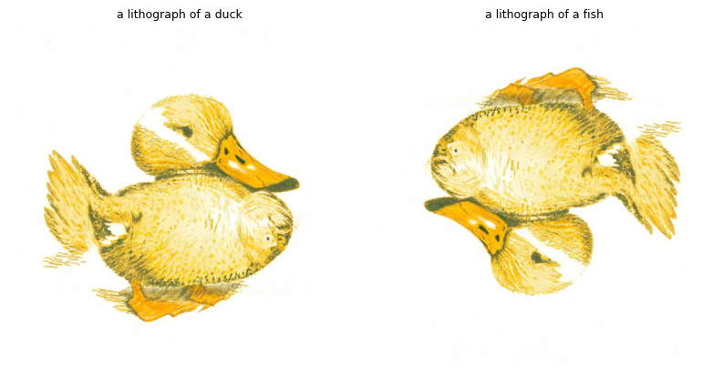
Both work pretty well. The duck's body becomes the fish's body when flipped, though the duck's beak is still visible in the fish.
Part A 3.4: Hybrid Images
I combined the low frequencies of one prompt's velocity with the high frequencies of the other's. The distant view is the image at its actual 64×64 size. Same idea as the hybrids in project 2, but instead of mixing two images, we mix the two velocities at every step.
Hybrid 1: Panda / Flowers
Distant: “a painting of a panda's face” · Close: “a painting of a bouqet of flowers”

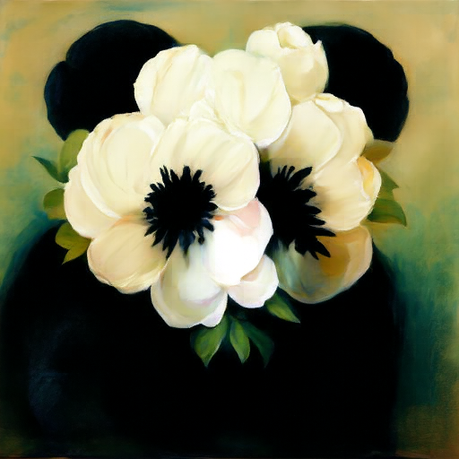

Up close it's flowers, and at 64×64 the dark parts become the panda's ears and eye patches.
Hybrid 2: Butterfly / Owl
Distant: “a lithograph of a butterfly” · Close: “a lithograph of an owl”


Up close it's an owl, and at 64×64 the wings look more like a butterfly. This one is weaker since the owl's face is still visible.
Part B: Flow Matching from Scratch
Part B 1.1: Implementing the UNet
I built the UNet from the given blocks, with skip connections between matching levels and D = 128. It downsamples twice to 7×7, flattens to 1×1, and then upsamples back, concatenating the matching encoder output at each level.
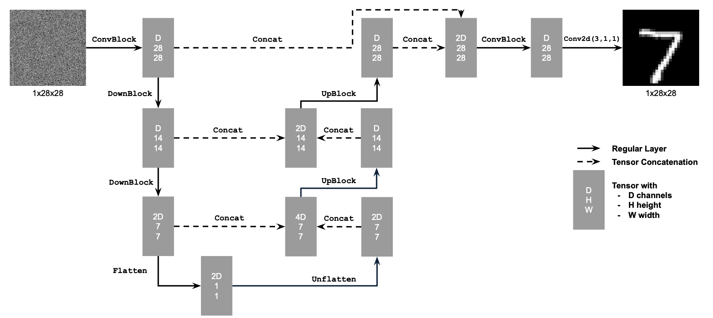
Part B 1.2: Using the UNet to Train a Denoiser
I added Gaussian noise scaled by σ to the digits. They're still readable around σ = 0.5 but mostly noise by σ = 1.0.
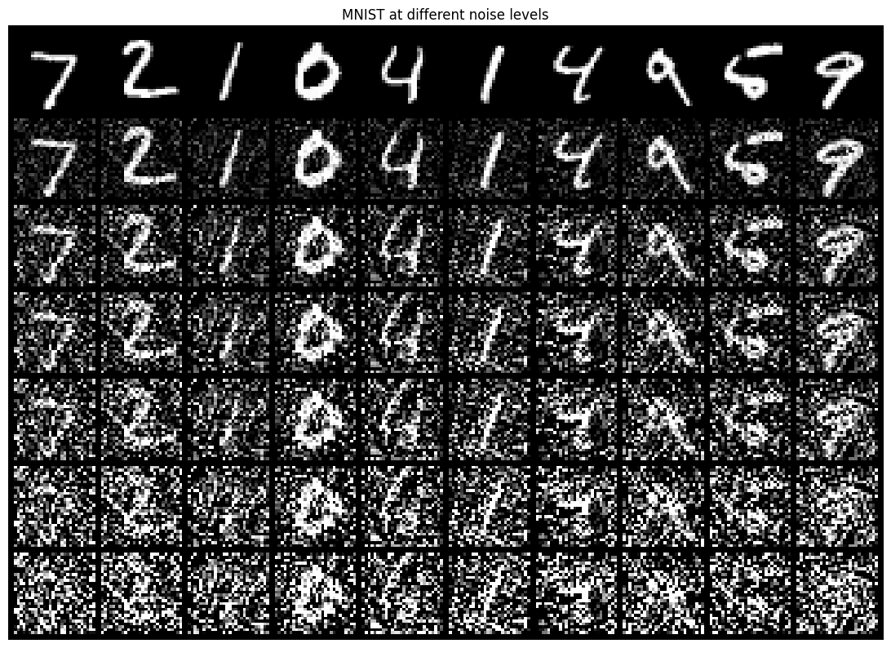
1.2.1 Training
σ = 0.5, D = 128, batch size 256, Adam with learning rate 1e-4, 5 epochs, and new noise every batch.
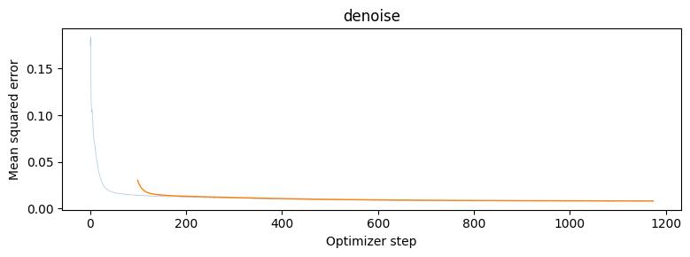
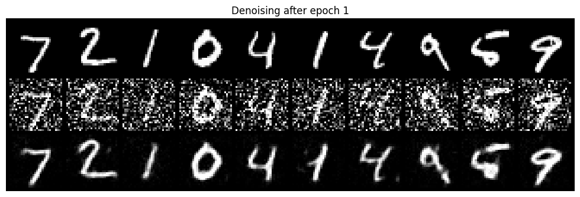
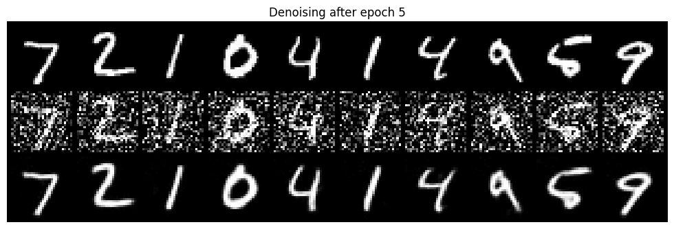
The rows are clean, noisy and denoised. Most of the noise is already gone after epoch 1, and the digits are cleaner after epoch 5. The loss drops fast in the first 100 or so steps and then slowly goes down to about 0.01.
1.2.2 Out-of-Distribution Testing
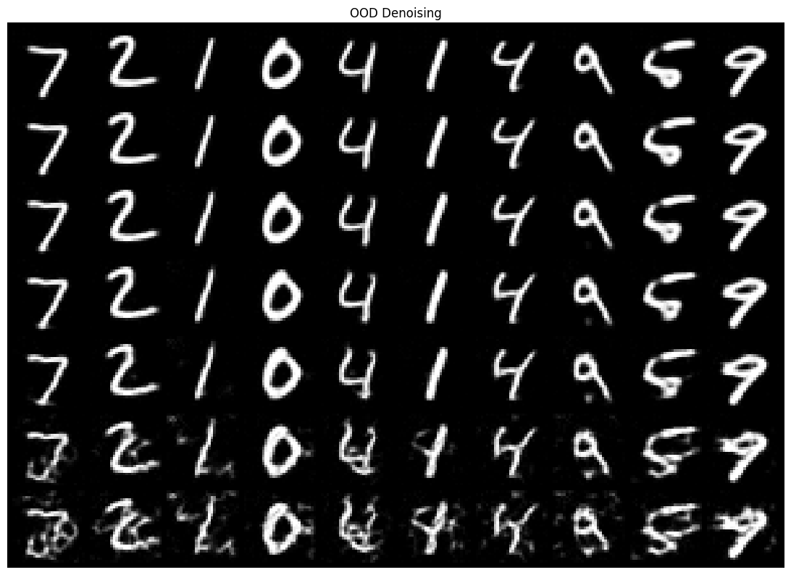
It does well up to σ = 0.6, but at 0.8 and 1.0 the strokes start breaking up. This is probably because it was only trained at σ = 0.5.
1.2.3 Denoising Pure Noise
Same training, but the input is pure noise.
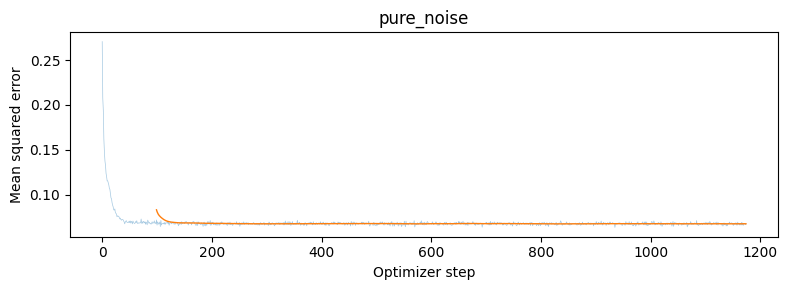
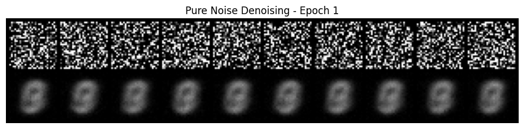
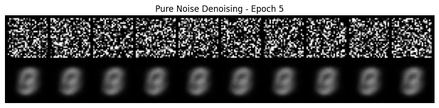
Every output is the same blurry shape, something between a 0, 3, 8 and 9, no matter what the input noise is, and it looks almost the same after epoch 1 and epoch 5. The loss also stops improving at around 0.07. This happens because the input has no information about which digit to produce, so the best the model can do under MSE loss is predict the average of all the training digits, like a centroid. The blurry shape is that average of all the digits overlapping. This is why one-step denoising doesn't work as a generative model.
Part B 2.1: Adding Time Conditioning to UNet
The UNet now predicts the velocity toward the clean image.
Part B 2.2: Training the Time-Conditioned UNet
D = 64, batch size 64, 10 epochs, Adam with learning rate 1e-2 and exponential decay, and 50 timesteps. The loss drops from about 1.7 to below 0.2 in the first few hundred steps, and then slowly goes down to about 0.09.
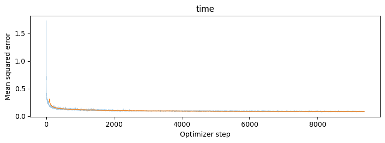
Part B 2.3: Sampling from the Time-Conditioned UNet
I started from noise and took 50 Euler steps, with the same seed for each epoch.
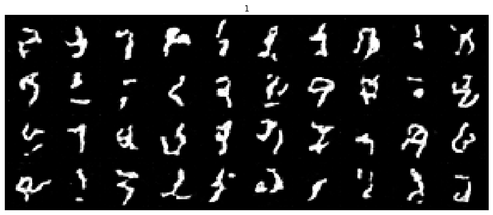
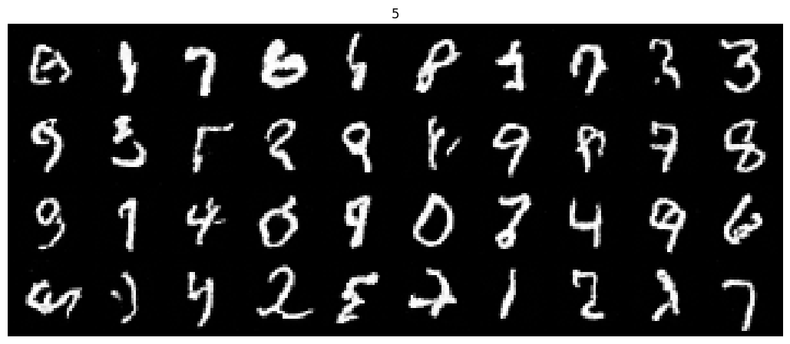
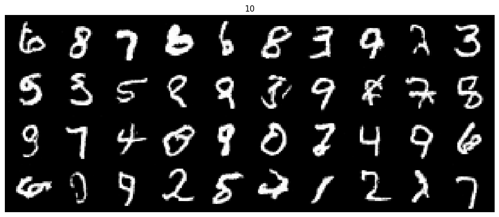
Epoch 1 is mostly squiggles. By epoch 5 a lot of them look like digits, and by epoch 10 most are readable, though some are still malformed. Since I used the same seed, we can see the same samples get cleaner from epoch 5 to 10, like the 3 in the top right. This makes sense since the model doesn't know which digit to make, so some samples end up somewhere between two digits.
Part B 2.4: Adding Class-Conditioning to UNet
The digit is a one-hot vector fed in through two more FCBlocks, and it's dropped 10% of the time so CFG works.
Part B 2.5: Training the Class-Conditioned UNet
Same as 2.2, but with the class label and 300 timesteps. The curve looks almost the same as the time-only one and levels off a bit below 0.1.
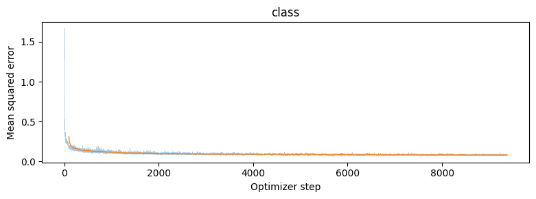
Part B 2.6: Sampling from the Class-Conditioned UNet
300 Euler steps with CFG (γ = 5), with four samples per digit.
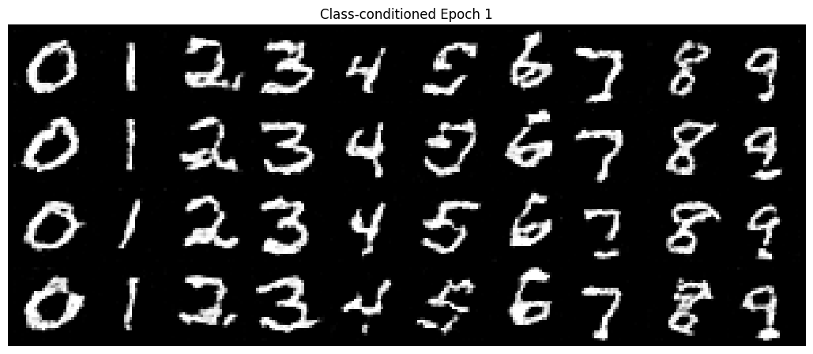
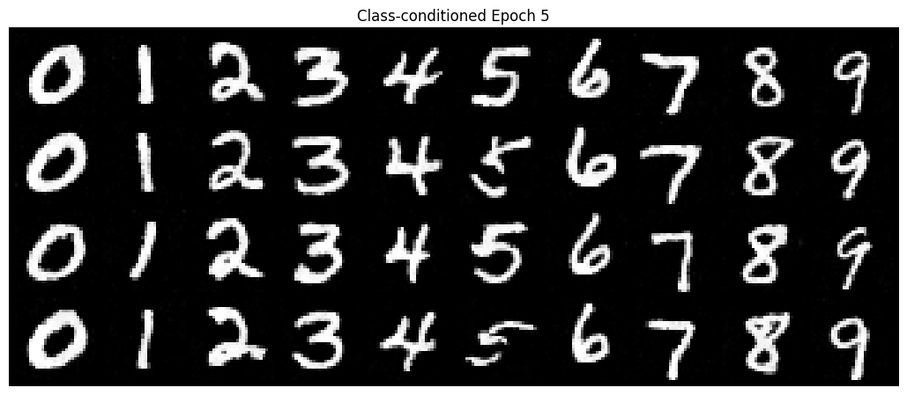
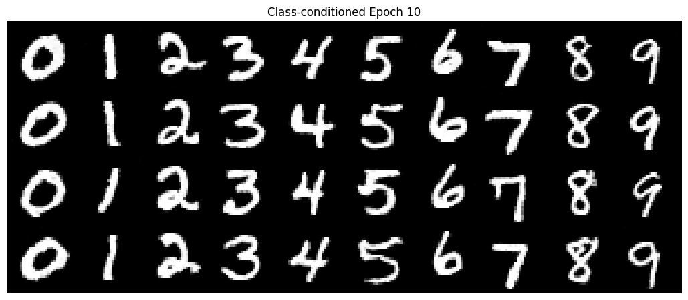
Even after epoch 1 every sample is the right digit, though some are blotchy. By epochs 5 and 10 they're clean, which is much better than the time-only model. This could be because the class label tells the model which digit to aim for, so it doesn't get stuck between digits like the time-only model.
Removing the Learning Rate Scheduler
The scheduler starts at 1e-2 and decays to about 1e-3 by the end of training. Without it, I used a constant learning rate of 1e-3 for the whole 10 epochs. A smaller constant learning rate keeps the training stable and lets the model settle without needing to decay it, while being large enough to still train in the same number of epochs.


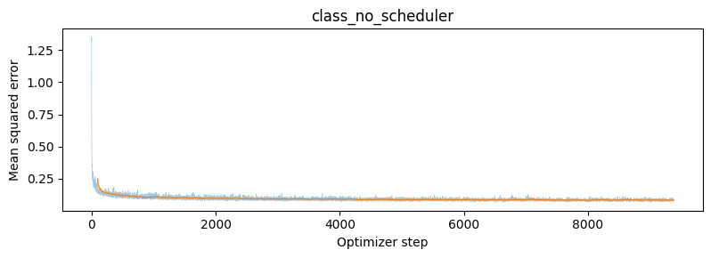


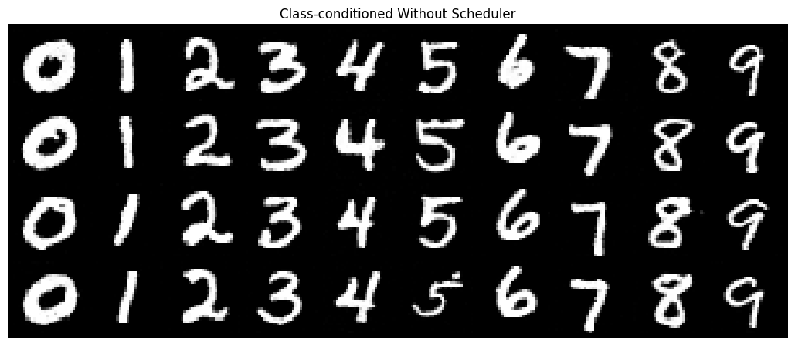
The loss curves and samples look almost the same with and without the scheduler. Both losses level off a bit below 0.1, and the samples without the scheduler are just as clean, with every digit correct.